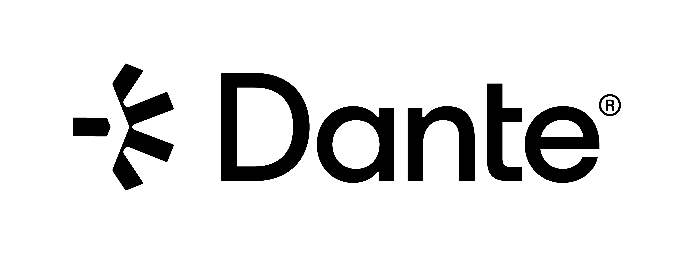
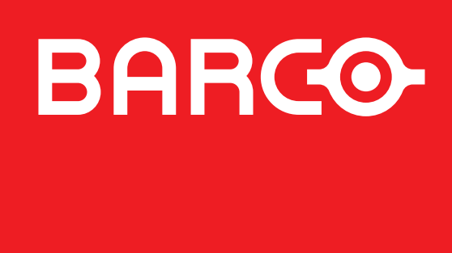
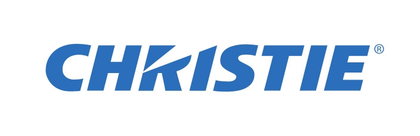
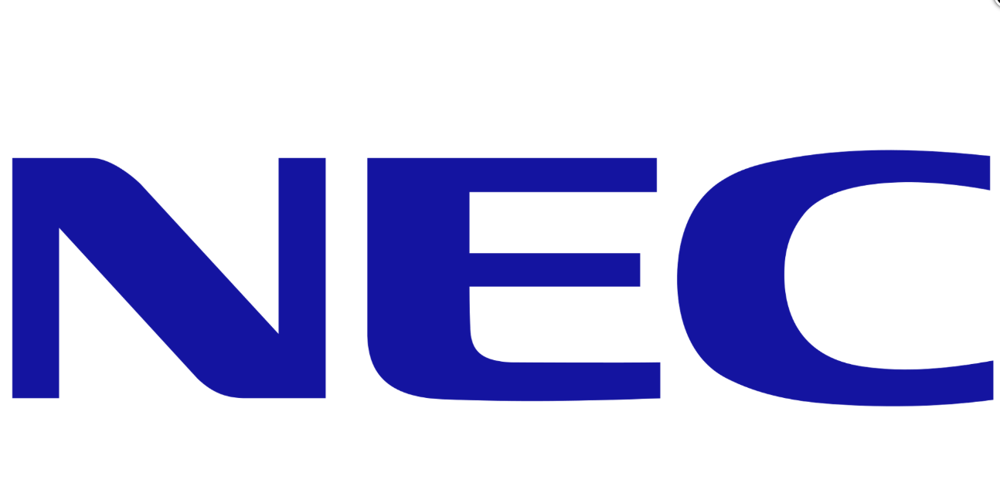

OEM Certifications & Engineering Qualifications
Official manufacturer certifications from Barco, Audinate Dante, QSC/Q-SYS, Christie, NEC, and Lightware Visual Engineering.

Dante Level 1 Certification
Audinate Audio-over-IP (AoIP)
Certified in foundational Dante digital audio routing, uncompressed PCM audio streaming over standard IP, PTP master clocking, latency configuration, and Dante Controller management.
Cinema 101 – Sound & System Training
Q-SYS / QSC Audio Systems
Certified in Q-SYS Core cinema DSP engine architecture, DCA / DPA-Q multi-channel power amplifier integration, loudspeaker telemetry line monitoring, and cinema acoustic tuning.

Barco Series 4 – Level 2 Diagnostics
Barco Digital Cinema
Certified in Barco Series 4 4K laser projector maintenance, Barco Alchemy ICMP-X media server marriage, optical light engine alignment, chiller loops, and board-level troubleshooting.
Laser Light Upgrade (LLU) Retrofit
Barco Series 2 to Laser Conversion
Authorized in converting legacy Xenon lamp-based DP2K Series 2 projectors to high-efficiency laser phosphor engines, thermal safety interlocks, and optical path optimization.
Lightware Academy – AV-over-IP
Lightware Visual Engineering
Certified in enterprise UBEX / VINX AV-over-IP architectures, uncompressed 4K video distribution, EDID management, and matrix switching over 1GbE/10GbE network fabrics.

Christie Digital Cinema Systems
CP2220 / CP2230 / RealLaser RGB
Hands-on qualification in Christie CineLife & RealLaser RGB pure laser projectors, touch panel controller (TPC) setup, DMD optical alignment, and light engine maintenance.

NEC NC Series Laser Projectors
NEC NC1200C / NC1202L / NC1402L
Field expertise in NEC compact laser cinema projectors, sealed optical engine maintenance, filterless cooling systems, and DCI color space verification.

Dolby CP750 / CP850 / CP950
Cinema Audio Processors & Atmos
Comprehensive calibration of Dolby Cinema audio processors, Cat5/Cat6 AES digital inputs, B-chain equalization, and Dolby Atmos multi-screen channel mapping.
Hardware & Computer Networking
IHT Moradabad, Uttar Pradesh
Formal 1-year diploma covering computer hardware architecture, TCP/IP networking, LAN/WAN topologies, router configuration, server administration, and structured cabling.